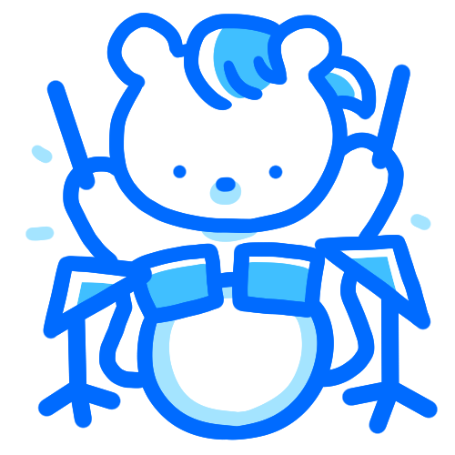

밴드 적성 검사
당신의 결과는...

보컬
악기보다도 목소리를 뽐내고 싶은 당신!
사실은 굉장한 발성 실력을 가졌을 수도..?!
마이크만 잡았다 하면 다른사람이 될 정도로 음악에 열정인 당신! 이번 밴드에서는 보컬을 맡아보는 게 어때요?
자신있는 분야라면 앞으로 나서는 것도 두려워 하지 않을 만큼 자신감도 대단하네요! 무대를 휘어잡을 수 있는 포지션인만큼 퍼포먼스를 보여주시는건 어때요? 무대의 분위기가 한층 더 UP! 될거예요. 다만 고집이 강한 성격인만큼 다른 포지션들과의 조율도 많이 필요해요. 악기 포지션들과 원활한 조율만 된다면 어떠한 장르도 당신의 밴드에겐 끄떡없을거예요.
이 포지션은 어때요?
세컨 기타
노래를 부르며 악기를 연주하고 싶다면, '세컨 기타'포지션을 함께 시작해보시는건 어때요?
나와 잘 어울리는 포지션
드럼
노래를 부르기에 정확한 박자를 만들어주는 드럼 포지션이야말로 당신의 베스트 프렌드! 드럼소리에 귀기울여보세요~